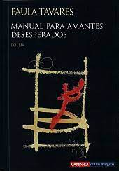
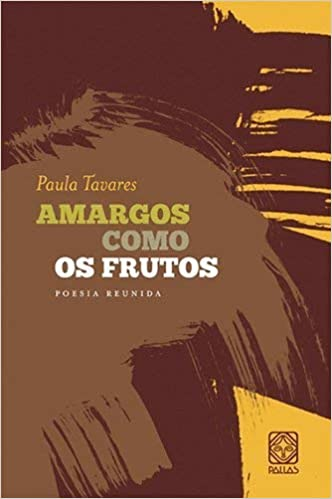

prémios

2007 – Prémio Nacional de Cultura e Artes, secção de Literatura, Angola, pelo livro Manual para amantes desesperados. Lisboa: Caminho, 2007.

2004 – Prémio Mário António da Fundação Calouste Gulbenkian, pelo livro Dizes-me coisas amargas como os frutos. Lisboa: Caminho, 2001.